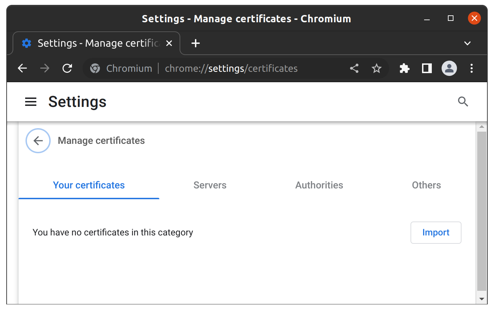
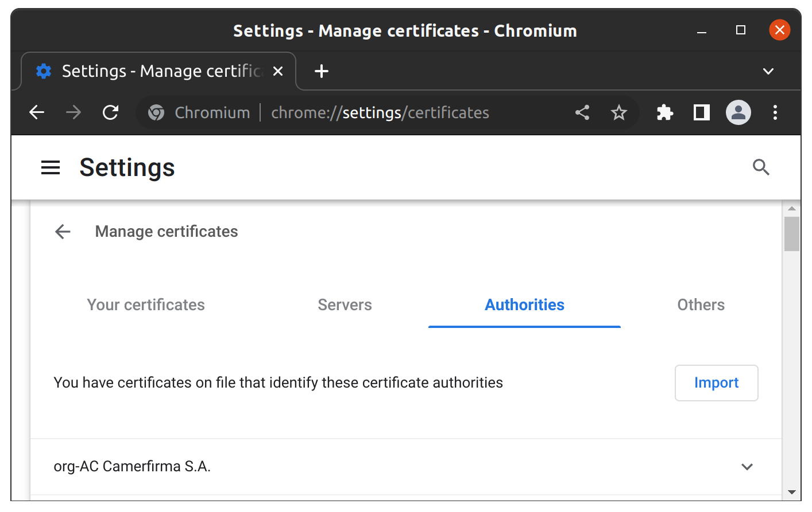
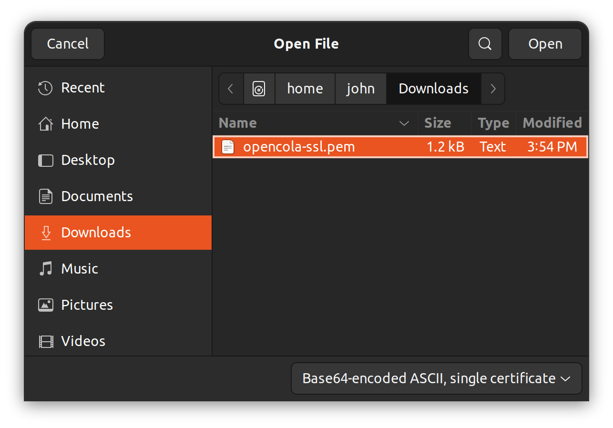
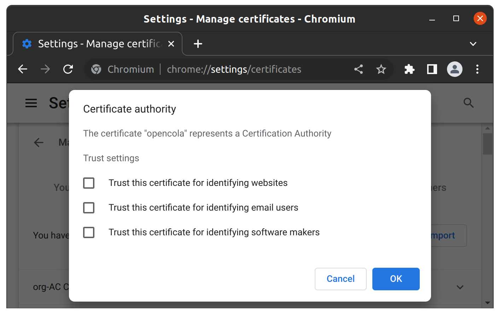
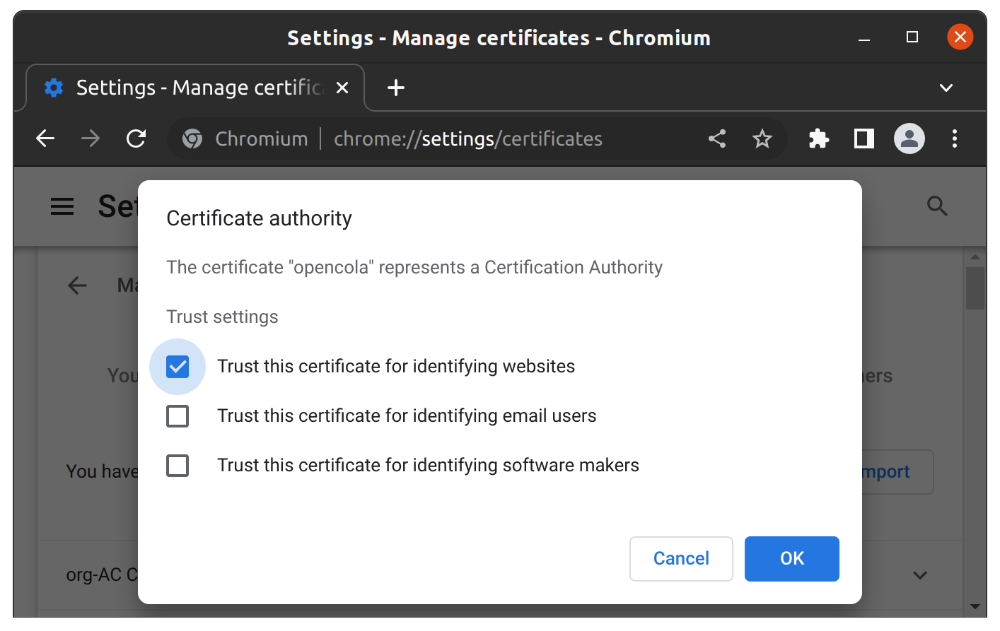

1. Copy the link chrome://settings/certificates (brave://settings/certificates for Brave)
** You can't click this link - it's not allowed for security reasons) ** ,
Open a new window (Ctrl + N) and paste into the location bar. Alternatively, you can go to the browser settings, search for certificates and click through to the certificates page. 2. Select the Authorities tab
3. Click the 'Import' button' and select Downloads
4. Double click opencola-ssl.pem your Downloads directory
5. Check 'Trust this certificate for identifying websites'
6. Click 'OK'